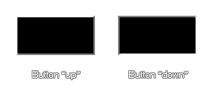

draw_button(x1, y1, x2, y2, up);
| Argument | Description |
|---|---|
| x1 | The x coordinate of the left of the button |
| y1 | The y coordinate of the top of the button |
| x2 | The x coordinate of the right of the button |
| y2 | The y coordinate of the bottom of the button |
| up | Whether the button is up (true) or down (false) |
Returns : N/A
This function will draw a very simple, rectangular "button" using the currently selected draw color and alpha where the up argument defines how the bevelled edge effect looks, as shown in the image below:

draw_button(100, 100, 200, 150, !mouse_check_button(mb_left));
This will draw a button which will appear pressed if the left mouse button is held down.